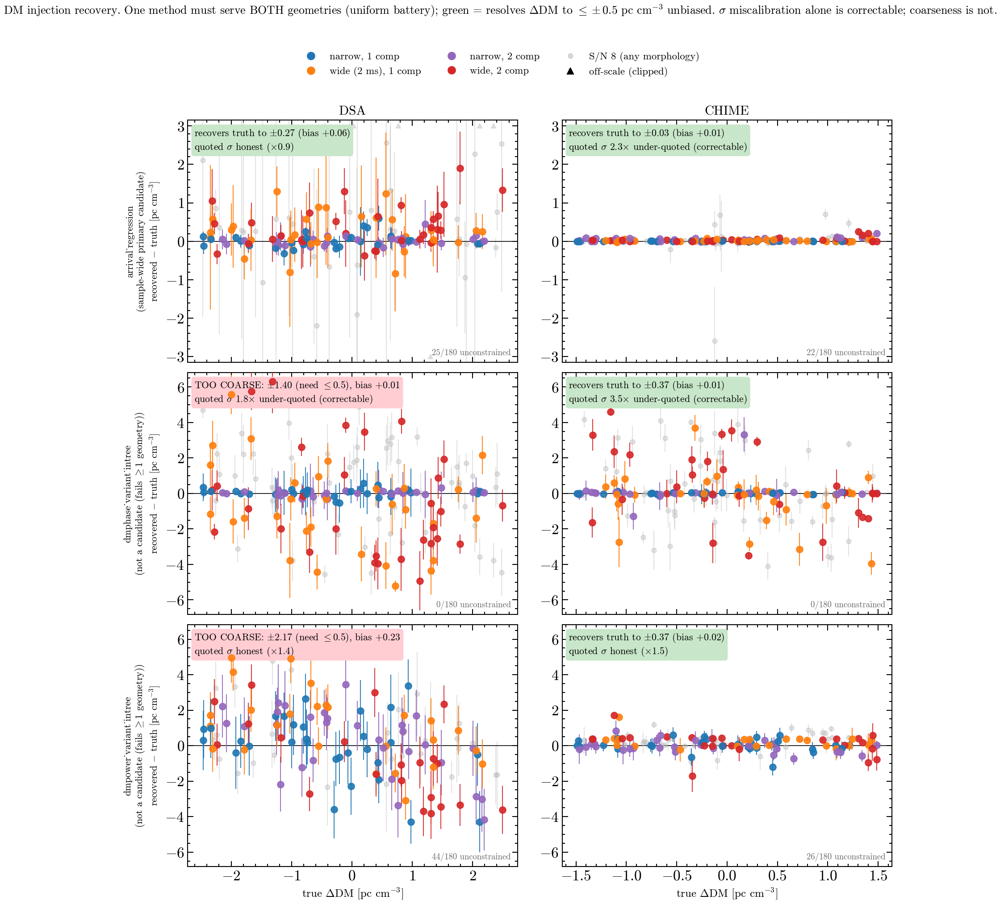
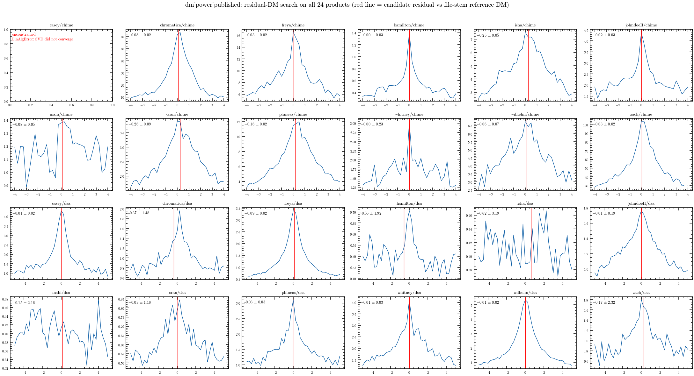
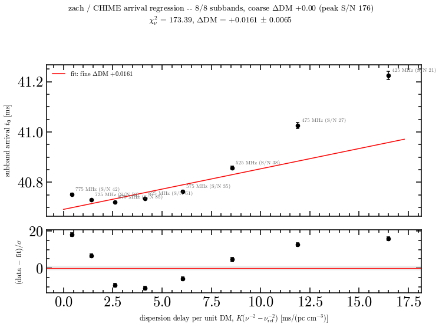
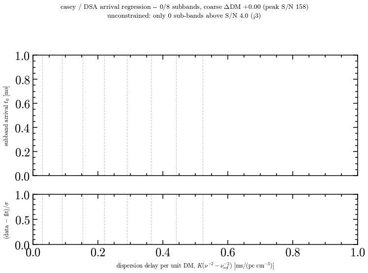
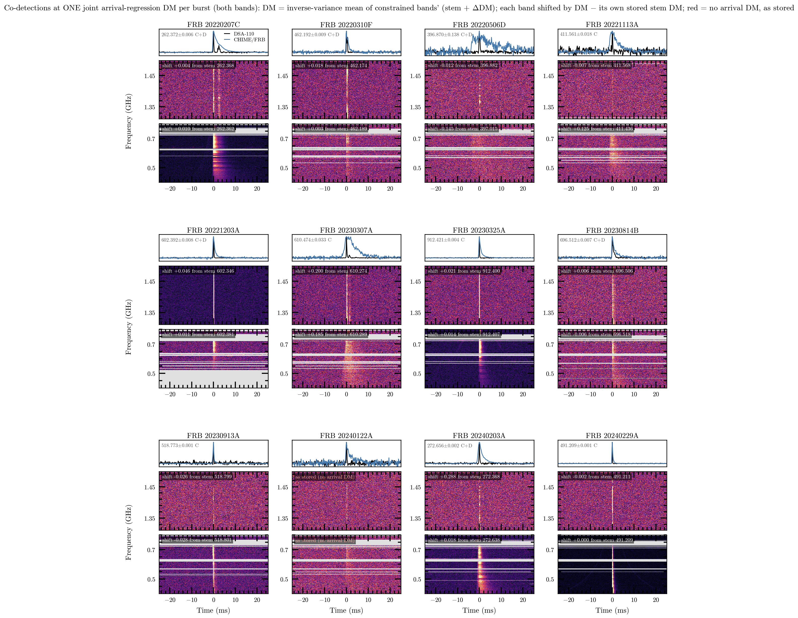
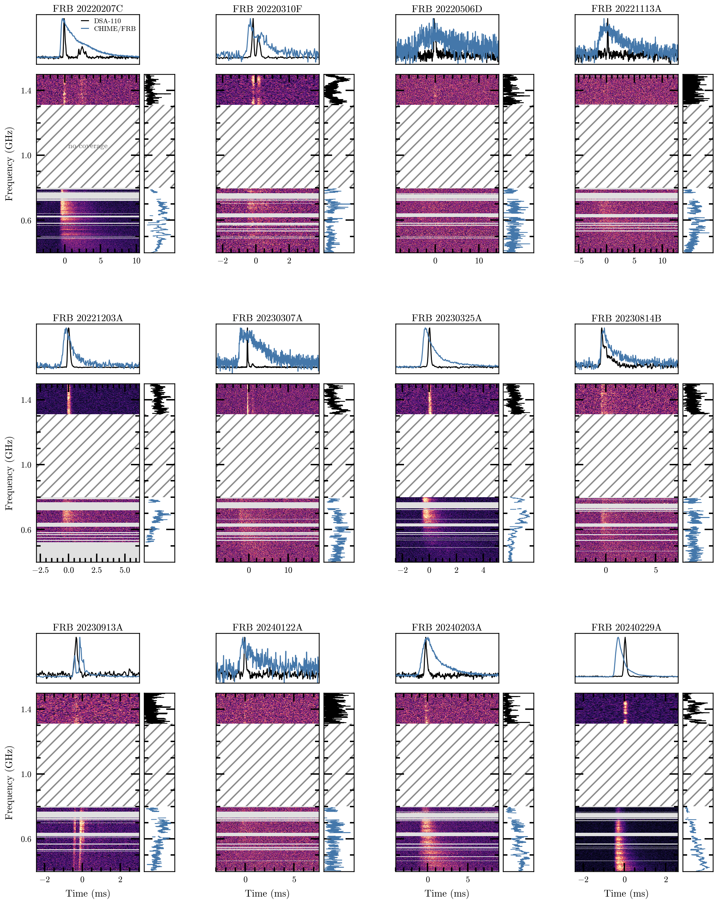

Two orthogonal verdicts per method/geometry: accuracy vs the ±0.5 requirement, and σ calibration (miscalibration is correctable; coarseness is not)
BLAS thread pinning after a 4-worker all-core run froze the laptop (the freeze you saw)
Phase 0 verdicts (full 360-cell matrix)

Green = resolves ΔDM to ≤±0.5 unbiased. No verdict flips between quick and full matrices.
Phase 0 verdict
Arrival regression is the only both-geometry candidate: DSA ±0.27 with honest σ (×0.9), CHIME ±0.03 with a correctable 2.3× under-quote
DM-phase family: accurate in median — supports "incorrectly implemented, not ineffective" — but morphology-fragile (wide / 2-component bursts scatter to ±5 even at S/N 80) with overconfident σ
DM-power: green on CHIME, too coarse on DSA (±2.17, bias +0.23)
Root cause is geometric: the DSA full-band dispersion sweep is ~3.5 samples per unit DM at product resolution — structure metrics have almost nothing to grip
Phase 1 — published packages, as released
Vendored DM_phase (b7cf5fd, GPL-3) and DM-power (f778735, no published license — internal use only) into pipeline/external/
Run exactly as released — only import-environment shims (mpi4py stub, CLI-globals setup), all documented
Uniform adapter contract: every method takes the same waterfall, returns dm ± σ + a search curve on one normalized residual-DM axis — 19 contract tests green
Key evidence: published DM-power passes the DSA bright-injection case where the in-tree variant failed — implementation, not algorithm
Red line = candidate residual. The "unconstrained" panels still show clearly peaked curves — that is the gate, not the data.
Battery — published DM-power

23/24 constrained; weak-geometry DSA products get honestly large σ. CHIME non-detections (mahi, oran, isha, phineas) self-flag across methods.

Where the σ under-quote lives
zach/CHIME: 8/8 subbands, formal errors tiny, arrivals deviate systematically with frequency — ±20σ residuals, χ²ν = 173
That is profile evolution across the band, not a DM error
χ²-inflation absorbs scatter but not a systematic trend — the injection-derived correction stays necessary

casey/DSA: 0/8 subbands survive — at coarse peak S/N 158
The DSA gate paradox
6 DSA products + mahi/CHIME rejected by the 8-subband S/N ≥ 4 gate while their coarse curves peak cleanly
Bursts are plainly visible in the waterfalls — config sensitivity, not non-detections
This is Phase 2's entry point: retune subbanding for the DSA band, recover the 7 runs
All 12 co-detections at ONE joint arrival-regression DM

Per burst: inverse-variance mean of the constrained bands' absolute DMs (stem + ΔDM); both bands shifted to it. Where both bands constrain they agree (chromatica 272.656 vs 272.662). Red = no arrival DM (mahi), shown as stored.
The manuscript gallery, reworked

fig:codetection-gallery — both bands to scale, hatched 0.80–1.31 GHz gap, on-pulse spectrum marginals, adaptive windows. Raw data, stored DMs (6e451c2).
Findings so far
Arrival regression is the leading sample-wide primary candidate — the only method accurate on both geometries (owner adjudicates in Phase 3)
The in-tree DM-phase/DM-power failures were implementation artifacts; the released algorithms behave
Quoted σ's need injection-derived inflation; the mechanism (band-dependent profile evolution) is now visible per product with χ²ν recorded
The 7 unconstrained runs are a fixable gate configuration issue, not missing signal
Cross-method residual scatter concentrates on the 4 known CHIME non-detections — everywhere else the methods agree
Next
Phase 2: retune the arrival-regression subband gate for DSA geometry; harden the degenerate subband-fit S/N; extract the joint-model per-band δDM layer (read-only)
Phase 3: synthesis memo; owner picks ONE primary method sample-wide; inter-method scatter becomes the per-burst systematic
Everything so far is on PR dsa110-FLITS#157 — injection harness, vendored packages, adapters, battery, fit diagnostics; all figures visually reviewed